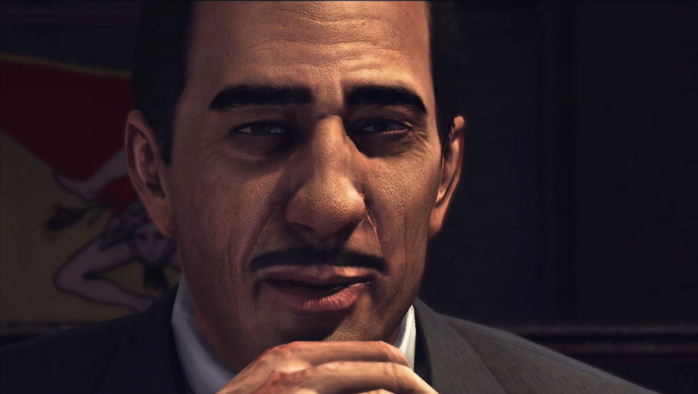
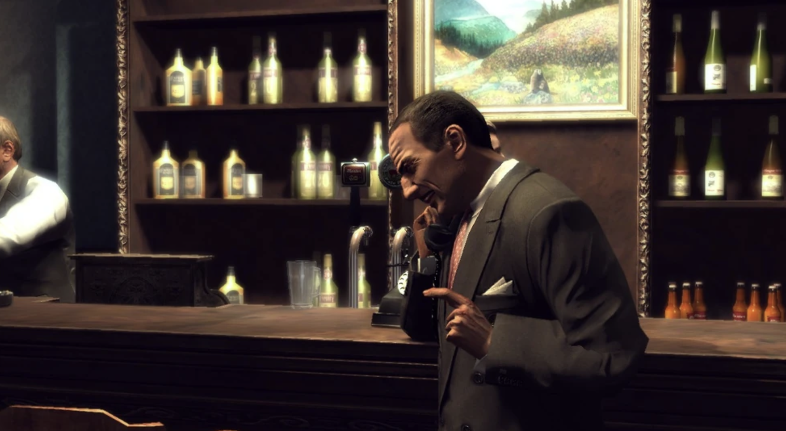
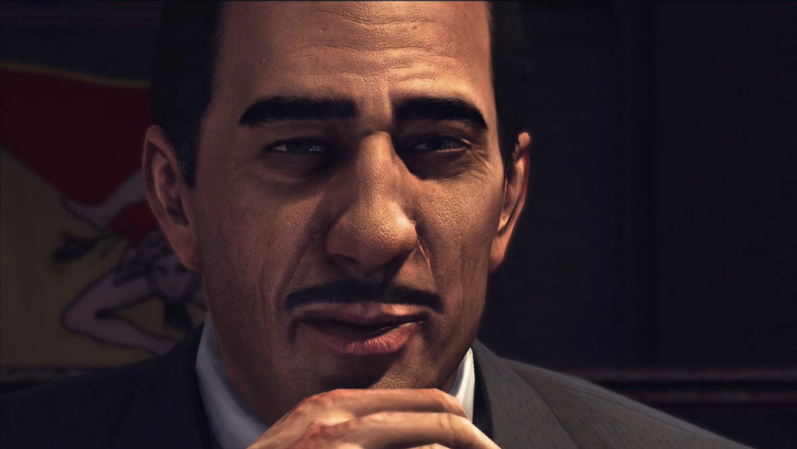
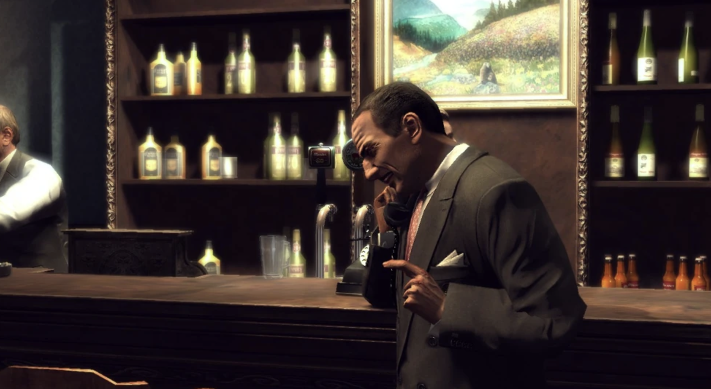

Лука Гурино является капореджиме в криминальной семье Клементе, и занял он это место, замуровав своего предшественника в фундаменте дамбы Калвера. Всегда безукоризненно одетый, Лука старается скрыть свой грубый характер флёром утонченности, хотя его невежество всегда просвечивает. Во время «сухого закона» он участвовал в бутлегерском предприятии дона Альберто Клементе, а впоследствии занимался менее благородными делишками семьи на бойне Клементе, где его жестокая натура обеспечила ему быстрое продвижение. Поскольку Лука является правой рукой дона самого сильного криминального синдиката в городе, то ему многое сходило с рук.
Обратно
 


